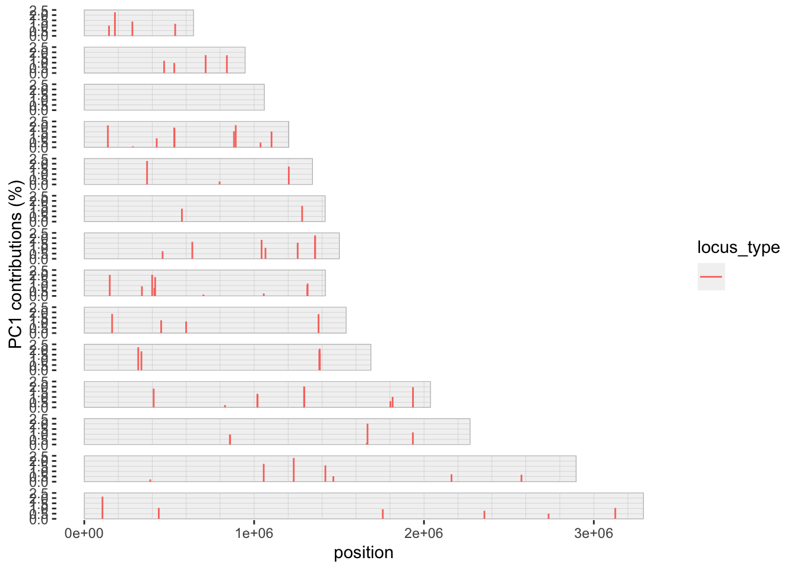

MIPanalyzer is a tool suite for analyzing Molecular Inversion Probe (MIP) data with functionalitiies that could be extended to other platforms/outputs such as small variant call files (VCFs) or multi-loci amplicon data. However, for the purpose of this tutorial, we will focus on MIP data using the file structure and outputs from the Bailey-Lab and MIPTools.
The MIPanalyzer suite has four main arenas of analysis:
Munging/wrangling MIP data
Calculating genetic distance
Analyzing genetic structure
Summarizing Drug Resistance Mutations (work in progress)
The tool is intended to make analysis of MIP data straightforward and standardized. Notably, many of the methods within the package rely on within-sample allele-frequencies to account for complexity of infection/polyclonality.
Data Input
We assume that the user has two files: (1) a variant call file following VCF4 specifications and (2) an amino acid table (TBD).
Munging MIP Data
As input for MIPanalyzer, we will start with a variant call file, abbreviated as a VCF of the Sanger Barcode from Vietnam. The VCF is converted into a mipanalyzer class that is either biallelic or multiallelic depending on the user specification.
#......................# read in the VCF from the main data page # and convert to mipanalyzer_biallelic object#......................dat_biallelic <- MIPanalyzer::vcf_to_mipanalyzer_biallelic("../../data/snp_barcode/sangerBarcode_SNP_INDEL_Pf3D7_ALL_v3.combined.filtered.vqslod6.biallelic_snp.Vietnam.vcf.gz")
Scanning file to determine attributes.
File attributes:
meta lines: 136
header_line: 137
variant count: 91
column count: 106
Meta line 136 read in.
All meta lines processed.
gt matrix initialized.
Character matrix gt created.
Character matrix gt rows: 91
Character matrix gt cols: 106
skip: 0
nrows: 91
row_num: 0
Processed variant: 91
All variants processed
The dat_biallelic object is a protected MIPanalyzer class (mipanalyzer_biallelic) that is tidy and fast container for genomic data. It has slots for sample name, loci (CHROM/POS/ID/REF/ALT/QUAL/FILTER/INFO), coverage (alleleic depth or dp), counts (allelic counts or ad), filter history (upstream manipulations performed on the object), and vcfmeta (the header of the original VCF file).
Filter
Data can be quickly filtered using a series of commands. Moreover, MIPanalyzer incorporates several data visualization functions that extend the interactiveness of filtering process. Below, I explore how much data will be lost if I filter loci that have at least 10 reads for all samples (minimal coverage is 10 reads with a 0% tolerance for any missing data).
There are similar capabilities to filter by sample (filter_samples) and by loci (filter_loci). Within the filter_samples framework, users can exclude samples that have poor coverage cross the genome. Below, I should how these fucntions can be used: filtering samples based on coverage (25 depth for all sites is shown below).
Similarly, loci that have an unexpected amount of sequencing effort (“jackpotting”) that may be prone to sequencing error can also be excluded with filter_overcounts. Finally, users can remove sites that are uninformative (all variants are the same) with filter_loci_invariant. This is demonstrated below:
For this section, we will explore pairwise relatedness through a variety of genetic distance measures. In the first schema, we can consider how allele frequencies are similar between samples using the \(d_{ab}\) metric proposed by the MalariaGEN Plasmodium falciparum Community Project in the article “Genomic epidemiology of artemisinin resistant malaria”, eLIFE (2016) (get_genomic_distance).
In a separate, schema, we can calculate the similarity between two samples based on whether the genetic sequence is identical at given genomic positions, or loci. We can either simply measure the number of sites with identical alleles between two individuals, termed identity by state (IBS), or, we can use statistical models to determine if identical alleles and “blocks” of the genome were likely to be inherited from a common ancestor, termed identity by descent (IBD). Separately, we can calculate if within-sample allele frequencies (+/- some degree of tolerance) are identical between two individuals - which is essentially a continuous extension of IBS. The IBS calculations are straightforward and just represent comparisons between samples. IBD calculations require parametric assumptions in order to account for the heritability factor (as part of its definition). The IBD calculator incorporated in MIPanalyzer is based off the classic Malécot definition of IBD and is considered in a maximum-likelihood framework.
# AF based methods dab_est <-get_genomic_distance(dat_biallelic, report_progress =FALSE)# identity based methodsmix_est <-get_IB_mixture(dat_biallelic, report_progress =FALSE)ibd_est <-inbreeding_mle(dat_biallelic, f =seq(0, 1, l =5),report_progress =FALSE)ibs_est <-get_IBS_distance(dat_biallelic, report_progress =FALSE)
The output for each distance calculator is a distance matrix with the upper triangle filled in, with the exception of the IBD estimator that also includes the log-likelihood of each inbreeding level, \(f\), considered by the model (specified by user).
As expected, our samples have much less IBD than IBS. Similarly, the \(D_{ab}\) has a wide range of values. However, across all four genomic distances, sample pairs that are highly related are
Analyzing Genetic Structure
In this section, we will perform a principal component analysis and plot the results to assess for structure (as part of an exploratory data analysis exercise).
We can also look at the amount of variance captured in our principal components as well as which loci are contributing most to the variation. Understanding the amount of variance that is captured in the principal components conveys how much structure is in the data, while understanding which loci are contributing the most variation conveys signals of selection, drift, etc.
# get CHROM in numeric format for each locuschrom_numeric <-mapply(function(x) as.numeric(strsplit(x, "_")[[1]][2]), dat_biallelic$loci$CHROM)# plot loading valuesplot_pca_contribution(pca, component =1, chrom = chrom_numeric, pos = dat_biallelic$loci$POS)

Another approach to analyzing structure is to assess principal coordinate analysis. While principal component analysis (PCA) is based on linear combinations, principal coordinate analysis (PCoA) is based on minimizing distance based on an internal loss function (also called classical scaling, function back-ended by ape::pcoa). The utility of PCoA versus PCA, is that PCoA can take any distance (matrix) that the user specifies and thus can capture genetic structures that may be nonlinear.
# genomic distance from malariagen manuscript as abovegdist <-get_genomic_distance(dat_biallelic, report_progress =FALSE)# perform PCoApcoa <-pcoa_genomic_distance(gdist)# scatterplotplot_pcoa(pcoa, num_components =3)
Summarizing Drug Resistance Mutations (work in progress)
To Do (pending file format from Bailey group)
Summary
In this tutorial, we explored how to use the MIPanalyzer to munge/wrangle MIP data, filter samples, and prepare our MIP data for analysis. We then performed genetic analysis by calculating genetic distances as well as analyzing our data for genetic structure.